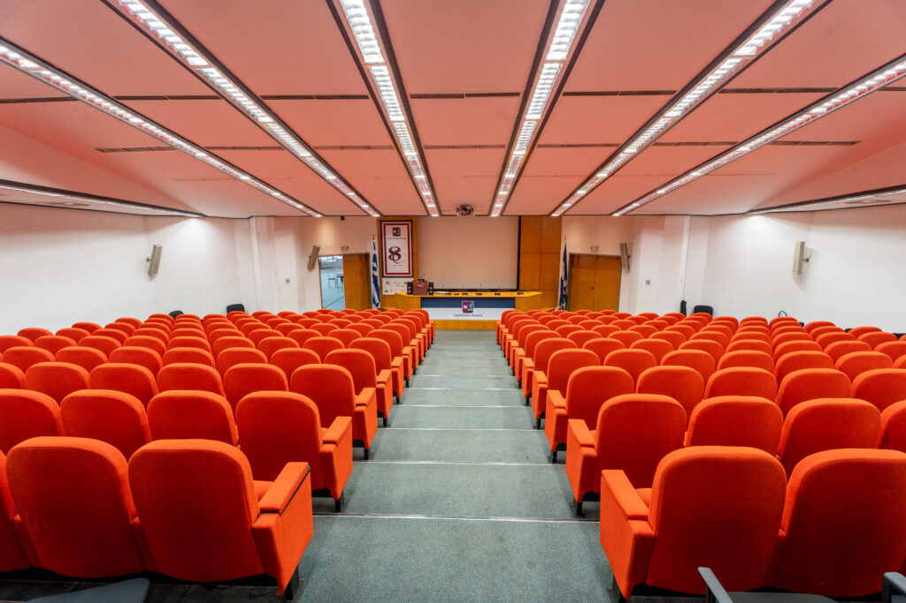

Το Τμήμα Πληροφορικής του Πανεπιστημίου Πειραιώς ιδρύθηκε με ΦΕΚ του 1991 και λειτουργεί από το 1992.
Είναι ένα από τα αρχαιότερα Τμήματα Πληροφορικής στην Ελλάδα. Οι βασικοί άξονες του Τμήματος είναι η εκπαίδευση και η έρευνα.
Η εκπαίδευση, παρέχεται σε 3 επίπεδα. Στο πρώτο επίπεδο παρέχονται οι προπτυχιακές σπουδές με την εισαγωγή φοιτητών
από τις Πανελλαδικές εξετάσεις της χώρας που οδηγούν στην απόκτηση Πτυχίου Πληροφορικής.
Στο δεύτερο επίπεδο παρέχονται μεταπτυχιακές σπουδές που οδηγούν στην απόκτηση Μεταπτυχιακού Διπλώματος Ειδίκευσης
και στο τρίτο επίπεδο παρέχονται διδακτορικές σπουδές που οδηγούν στην απόκτηση διδακτορικού διπλώματος.
Στο 3ο έτος σπουδών δίνεται η δυνατότητα επιλογής μιας κατεύθυνσης από 3 κατευθύνσεις:
 Ακόμα δίνεται η δυνατότητα απόκτησης Διδακτικής Επάρκειας για να μπορούν οι απόφοιτοι του Τμήματος να διδάσκουν Πληροφορική σε επίπεδο δευτεροβάθμιας και πρωτοβάθμιας εκπαίδευσης. Το Τμήμα Πληροφορικής του Πανεπιστημίου Πειραιώς οργανώνει και λειτουργεί 4 ΠΡΟΓΡΑΜΜΑΤΑ ΜΕΤΑΠΤΥΧΙΑΚΩΝ ΣΠΟΥΔΩΝ (ΠΜΣ):
Για την απόκτηση του τίτλου σπουδών απαιτείται η φοίτηση επί οκτώ (8) εξάμηνα σπουδών και η συγκέντρωση συνολικά 240 πιστωτικών μονάδων (ECTS). Σύμφωνα με το εν ισχύ πρόγραμμα σπουδών απαιτούνται σαράντα οκτώ (48) μαθήματα για τη λήψη πτυχίου, πλέον των μαθημάτων ξένης γλώσσης (στη περίπτωση μη απαλλαγής, ως ορίζεται κατωτέρω), καθώς και του μαθήματος «ΕΠΙΣΤΗΜΟΝΙΚΗ ΣΥΓΓΡΑΦΗ ΣΤΗΝ ΕΚΠΑΙΔΕΥΣΗ» που αφορά στο σύνολο των φοιτητών (ως ορίζεται κατωτέρω).
Για τα μαθήματα ξένης γλώσσας καθώς και το μάθημα «ΕΠΙΣΤΗΜΟΝΙΚΗ ΣΥΓΓΡΑΦΗ ΣΤΗΝ ΕΚΠΑΙΔΕΥΣΗ» σημειώνεται ότι:
Είναι δυνατή η απαλλαγή από την εξέταση των μαθημάτων ξένης γλώσσας, καταθέτοντας στη γραμματεία του Τμήματος τίτλο γλωσσομάθειας επιπέδου τουλάχιστον Β2 σύμφωνα με τα πρότυπα του ΑΣΕΠ.
Η δομή του Προγράμματος Σπουδών απεικονίζεται στον πίνακα που ακολουθεί.
| 1ο Έτος | |
|---|---|
| 1ο Εξάμηνο | 2ο Εξάμηνο |
| 6 υποχρεωτικά μαθήματα | 6 υποχρεωτικά μαθήματα |
| 2ο Έτος | |
|---|---|
| 3ο Εξάμηνο | 4ο Εξάμηνο |
| 5 υποχρεωτικά μαθήματα +1 μάθημα επιλογής +1 ξένη γλώσσα | 5 υποχρεωτικά μαθήματα +1 μάθημα επιλογής +1 ξένη γλώσσα |
| 3ο Έτος | |
|---|---|
| 5ο Εξάμηνο | 6ο Εξάμηνο |
| 4 υποχρεωτικά μαθήματα κατεύθυνσης +2 υποχρεωτικά μαθήματα κατεύθυνσης +1 μάθημα επιλογής +1 ξένη γλώσσα | 2 υποχρεωτικά μαθήματα κατεύθυνσης +3 υποχρεωτικά μαθήματα κατεύθυνσης +1 μάθημα επιλογής +1 ξένη γλώσσα |
| 4ο Έτος | |
|---|---|
| 7ο Εξάμηνο | 8ο Εξάμηνο |
| 1 πτυχιακή εργασία +3 υποχρεωτικά μαθήματα κατεύθυνσης +2 μαθήματα επιλογής | 1 πτυχιακή εργασία +3 υποχρεωτικά μαθήματα κατεύθυνσης +2 μαθήματα επιλογής |
Επιλέξτε περιοχή για περαιτέρω πληροφορίες για την αντίστοιχη κτηριακή εγκατάσταση του πανεπιστημίου Πειραιά.

Μ. Καραολή & Α. Δημητρίου 80, 18534 Πειραιάς